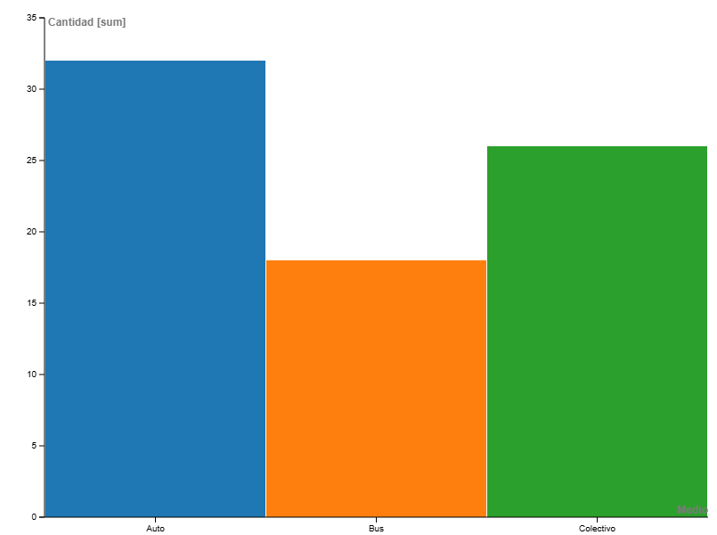

¿Qué analizo en este proyecto?
En este proyecto analizo mis viajes laborales entre Santa Rosa y General Pico en el periodo febrero–julio de 2025. A través de distintas visualizaciones muestro: qué medios de transporte utilicé, cómo varió su uso según el contexto, cuál fue su costo por minuto y qué distancia recorrí con cada uno. El objetivo es reflejar mis patrones de movilidad laboral y detectar posibles mejoras en tiempo y costos.
¿Qué medio de transporte uso más entre Santa Rosa y Pico?

¿Cómo varía mi uso del transporte según el contexto laboral?
¿Cuál es el tiempo promedio por medio de transporte?
¿Qué medio es más eficiente en costo por minuto?

Conclusiones clave
- Frecuencia: Un medio predomina en los traslados Santa Rosa ↔ General Pico, lo que muestra una preferencia clara.
- Contexto: El uso varía según reuniones presenciales y carga de trabajo. Anticipar horarios ayuda a reducir tiempos muertos.
- Costo por minuto: Hay diferencias importantes entre medios; priorizar los más eficientes en jornadas largas mejora productividad.
- Distancia total: La mayor parte de los kilómetros se concentra en un medio, lo que implica atención especial al mantenimiento y consumo.
Próximo paso: evaluar combinaciones de medios por franja horaria y estimar el ahorro potencial de tiempo y costo en los próximos meses.
Metodología
- Periodo: 1 feb – 31 jul 2025
- Registro: viajes laborales Santa Rosa ↔ General Pico
- Variables: medio, duración, costo/min, distancia
- Herramientas: RAWGraphs, Flourish, Tableau, Datawrapper
- Limitaciones: estimaciones sujetas a clima y estado de ruta